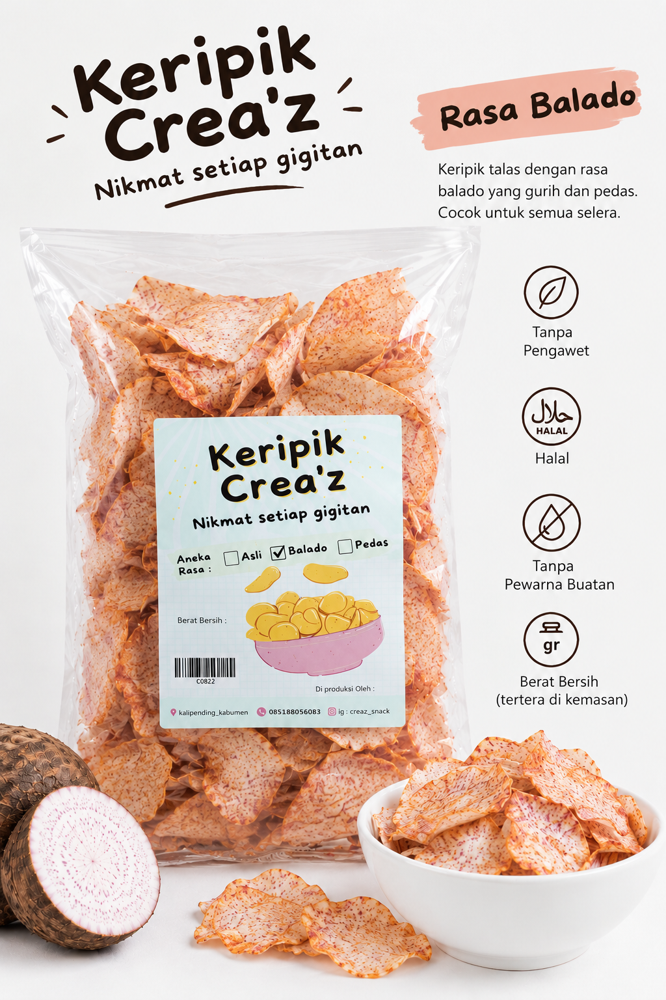
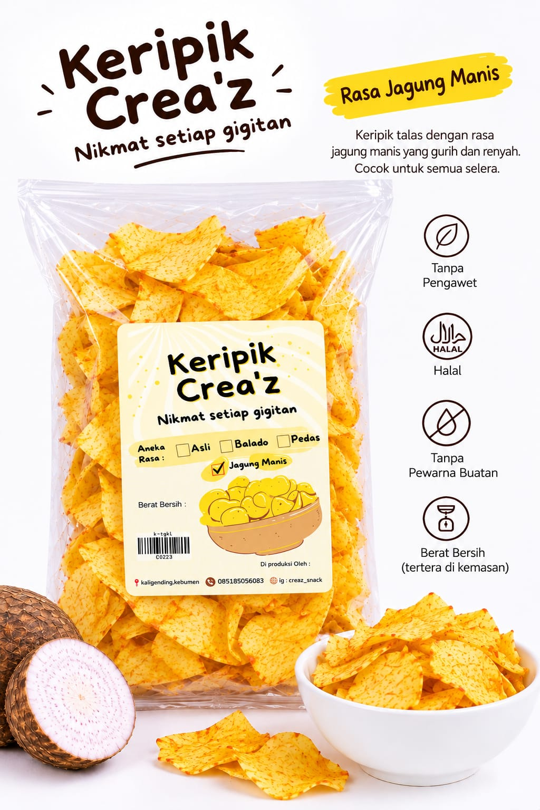
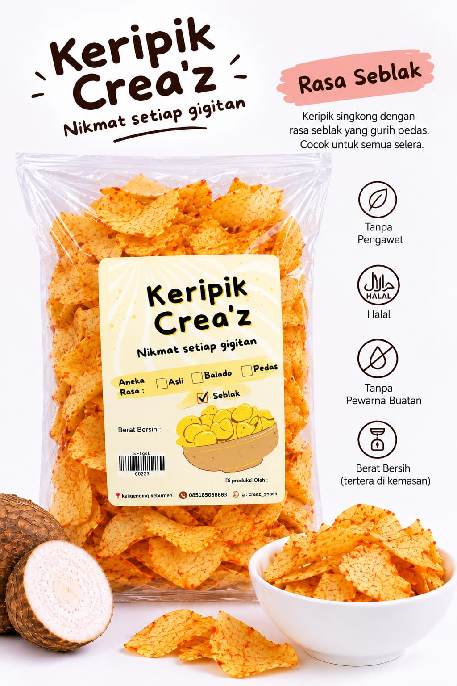

Talas • Promo
Keripik Talas Crea'z — Rasa Asli
Rp 10.000Rp 8.000-20%
Talas • Terlaris

Keripik Talas Crea'z — Rasa Balado
Rp 12.000Rp 10.000Hemat
Talas • Jagung

Keripik Talas Crea'z — Rasa Jagung Manis
Rp 12.000Rp 10.000Hemat
Singkong • Promo
Keripik Singkong Crea'z — Rasa Original
Rp 10.000Rp 8.000-20%
Singkong • Best Seller
Keripik Singkong Crea'z — Singkong Pedas Manis
Rp 12.000Rp 10.000Hemat
Singkong • Seblak

Keripik Singkong Crea'z — Rasa Seblak
Rp 12.000Rp 10.000Hemat